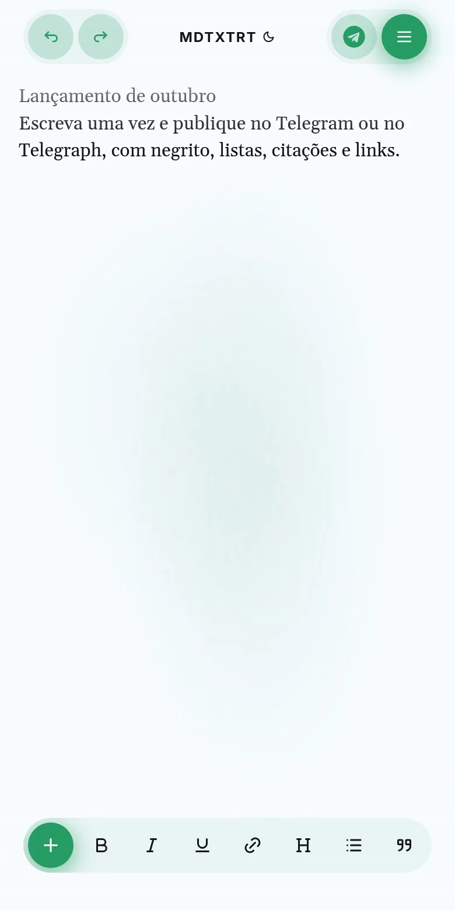
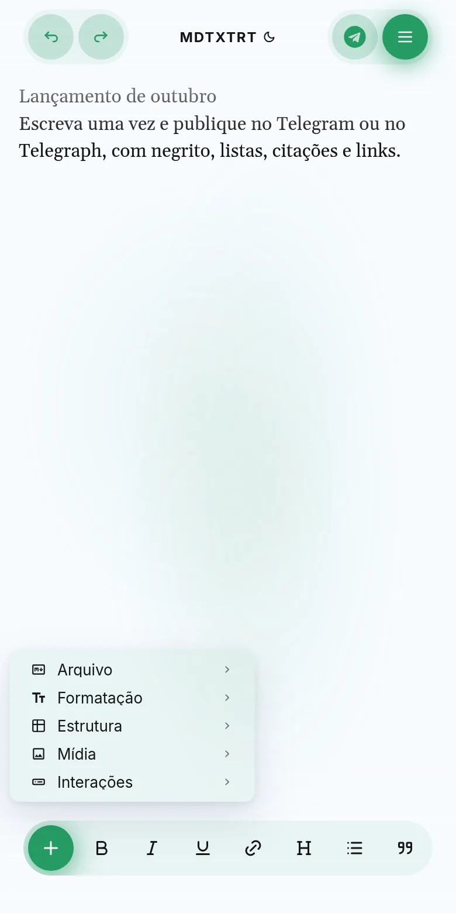
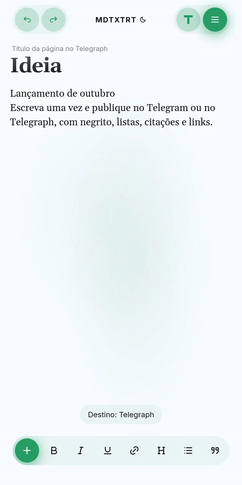
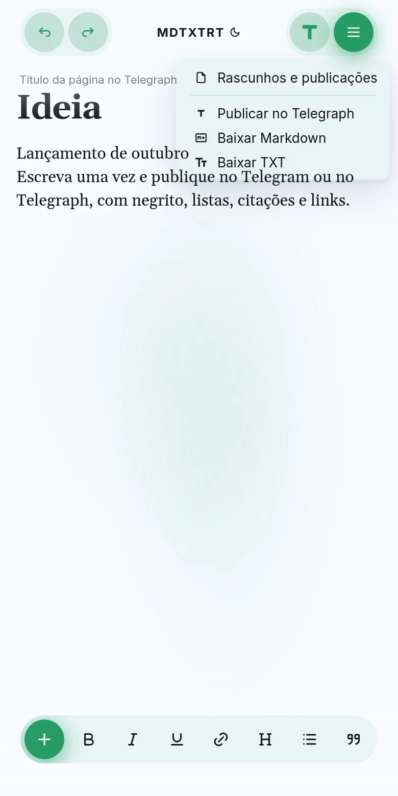

Escreva uma vez.
Publique onde quiser.
O MDTXTRT é um editor de texto com visual de vidro líquido. Você escreve com formatação de verdade e publica como mensagem no Telegram ou como página no Telegraph. Ele funciona no navegador, instalado como app e dentro do próprio Telegram.
O que ele faz
Tudo o que você precisa para escrever, guardar e publicar, sem trocar de ferramenta.
Editor de verdade
Títulos, negrito, itálico, sublinhado, links, listas e citações, com desfazer e refazer. O que você vê é o que será publicado.
Dois destinos
No Telegram, o texto sai como mensagem formatada, e cada atualização guarda a versão anterior no chat. No Telegraph, a página continua no mesmo endereço quando você edita.
Markdown e TXT
Importe e exporte arquivos .md e .txt pelo editor ou mandando o arquivo na conversa com o bot.
Rascunhos seguros
O texto fica salvo no aparelho e no servidor. Uma biblioteca reúne rascunhos e publicações, e o editor nunca substitui uma cópia salva sem você escolher.
Em qualquer lugar
Navegador, app instalado (PWA) e Mini App do Telegram, respeitando o teclado do celular e as áreas seguras da tela.
Comandos do bot
/novo, /rascunhos, /telegraph, /enviar, /exportar, /importar e /ajuda na conversa privada.
Como usar, em quatro passos
As imagens são do app no tamanho de um celular.

Escreva
Abra o editor e comece a digitar. No alto ficam desfazer e refazer, o destino e o menu. Embaixo, a barra de formatação rápida: negrito, itálico, sublinhado, link, título, lista e citação.

Formate e insira
O botão + abre tudo o que dá para inserir, organizado em Arquivo, Formatação, Estrutura, Mídia e Interações. O menu mostra só o que o destino escolhido aceita.

Escolha o destino
O botão ao lado do menu alterna entre Telegram e Telegraph. No Telegraph aparece o título da página.

Publique ou baixe
O menu ☰ publica no destino, baixa o texto em Markdown ou TXT e abre a biblioteca de rascunhos e publicações.
Liquid Glass
A interface é feita de vidro: barras e menus flutuam sobre o texto, deixam a cor passar e somem da frente quando não são usados.
Desde a fase 1, o vidro tem:
- Material translúcido e neutro, que pega a cor do que está atrás em vez de pintar tudo de uma cor só.
- Lentes com refração de verdade (WebGL 2), que curvam o conteúdo nas bordas como vidro, também nas barras de cima e de baixo.
- Um aro fino e discreto em cada peça de vidro, sem contorno azul de foco.
- O mesmo espaçamento entre todos os botões, como no site de referência do Liquid Glass.
- Tema claro e escuro, com a página se fundindo na barra do navegador e do Telegram.
Revisão: onde o produto está hoje
Já funciona
Editor, publicação no Telegram e no Telegraph, Markdown e TXT, biblioteca e rascunhos salvos no servidor. O editor do Mini App voltou a abrir, e ele não trava mais quando o servidor falha.
Ainda falta
Passar o campo de título do Telegraph para o React, baixar MD e TXT pelo recurso nativo do Telegram e a aceitação no iPhone, no app instalado e no Mini App.
Como garantimos
Cada mudança passa por testes de comportamento do editor e do servidor e por testes em navegador real, no Chromium e no WebKit, em celular e desktop, claro e escuro.
Roteiro
Fase 0: base limpa
A biblioteca de vidro é instalada do fork correto, os testes que congelavam o design saíram e entraram testes em navegador real.
Correções urgentes
O servidor voltou a entregar o núcleo do editor (#130). A recuperação de rascunho oferece tentar de novo ou começar outro (#131), e o botão Voltar do Telegram não descarta mais nada (#132).
Fase 1: o vidro líquido
Lentes com refração, material neutro, aro fino e espaçamento uniforme, com o teclado aberto ao usar os menus e nenhum menu cortado na tela (#135–#138).
Estabilização
Teclado do iPhone continua aberto ao tocar nos menus, atalhos Markdown de volta, modo escuro mais escuro e refração nas barras (#141).
Auditoria Telegram e Telegraph
Bot, servidor e site revisados contra a documentação atual. Abrir uma página do Telegraph para editar e o /exportar voltaram a funcionar com o formato real das páginas, e a verificação do Mini App segue a regra oficial (#143).
Fase 2: organização interna
O estilo saiu do index.html (#139), o estado dos menus passou para o React (#140), o servidor foi dividido em módulos (#144), o editor também (#145) e o aviso passou a ser estado React (#146). Falta só o campo de título do Telegraph.
Produto final
Aceitação no iPhone, no app instalado e no Mini App do Telegram, com uma interface coerente do começo ao fim.